Mục tiêu học tập
Sau khi học xong Chương 5, bạn cần làm được từng việc dưới đây. Nhãn cho biết nội dung nằm ở mục nào.
- 5.1Mô tả vai trò không thể thiếu của nước trong sự hình thành mọi loại đá trầm tích.
- 5.2Giải thích cách phong hóa hóa học và phong hóa cơ học biến đá gốc thành trầm tích.
- 5.3Phân biệt đá vụn, cấu tạo từ các mảnh đá gốc bị phong hóa, với đá hóa học, kết tủa từ dung dịch bằng con đường hữu cơ hoặc vô cơ.
- 5.4Giải thích tầm quan trọng của cấu tạo trầm tích và môi trường trầm tích, và cách chúng giúp hiểu lịch sử Trái Đất.
Cách dùng tài liệu này
Các từ được gạch chân là thuật ngữ chính. Nhấn vào một từ, hoặc mở Thuật ngữ ở góc dưới bên phải, để đọc và tìm mọi định nghĩa trong chương. Phần lớn bề mặt Trái Đất là đá trầm tích hoặc trầm tích tạo nên nó, và hầu hết chúng có chung một điểm: nước.
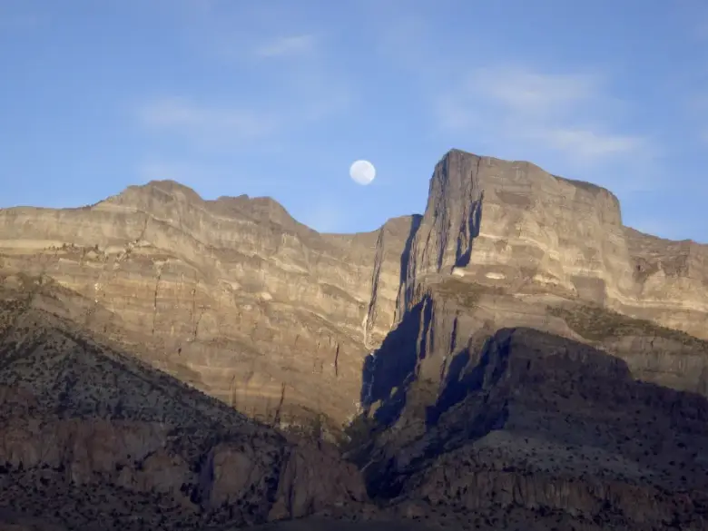
5.1Các tính chất đặc biệt của nước
Nước tham gia hình thành hầu hết đá trầm tích. Nước là tác nhân chính tạo ra khoáng vật của đá trầm tích hóa học, đồng thời phong hóa và xói mòn đá gốc thành các hạt về sau trở thành đá vụn (detrital, clastic).
Phân tử nước gồm hai nguyên tử hydro liên kết cộng hóa trị với một nguyên tử oxy, cách nhau khoảng 105° và cùng nằm về một phía của oxy (Hình 5.2). Phía hydro hơi dương, phía oxy hơi âm. Tính chất này, (polarity), giống như hai cực của pin hay nam châm, và là nguyên nhân của các tính chất dưới đây.
- Bám vào chất khác và vào chính nó. Nước bám vào các chất khác (, adhesion) và vào chính nó (, cohesion). Sự cố kết tạo giọt nước và tạo (surface tension), giúp một số côn trùng đi được trên mặt nước.
- Thể lỏng đặc hơn thể rắn. Tính phân cực tạo các (hydrogen bond) yếu, cho phép các phân tử nước lỏng nằm sát nhau. Nước đặc nhất ở 4 °C. Khi đóng băng, các phân tử bị đẩy xa nhau vào mạng tinh thể, nên nước nở ra và băng nổi. Vì nước 4 °C chìm xuống, đại dương không đóng băng hoàn toàn từ đáy lên, nhờ vậy Trái Đất vẫn có thể có sự sống.
- Ở thể lỏng trong khoảng nhiệt độ rộng. Liên kết hydro giúp nước lỏng hấp thụ nhiều năng lượng trước khi sôi, nên nước ở thể lỏng từ 0 °C đến 100 °C (32–212 °F) và có mặt từ cực này đến cực kia. Nước là chất duy nhất có mặt ở cả ba thể rắn, lỏng và khí trong môi trường bề mặt Trái Đất.
- Dung môi vạn năng. Nước hòa tan được nhiều chất hơn mọi chất lỏng tự nhiên phổ biến khác. Các phân tử nước dùng tính phân cực và liên kết hydro để tách ion ra khỏi mạng tinh thể; với đủ thời gian, nước có thể hòa tan cả những loại đá bền nhất.
Tự kiểm tra: Câu hỏi Mục 5.1 trong giáo trình (tiếng Anh) ↗
5.2Phong hóa và xói mòn
(bedrock) là lớp đá rắn của vỏ ngoài Trái Đất. (weathering) biến đá gốc thành các hạt nhỏ hơn gọi là (sediment). Phong hóa diễn ra theo hai cách, tóm tắt ở Bảng 5.1. Sau đó (erosion) mang trầm tích (và đất) khỏi nơi bị phong hóa.
| Kiểu | Tác động | Các quá trình |
|---|---|---|
| Cơ học (vật lý) | Làm đá vỡ vụn thành mảnh nhỏ hơn | Giãn nở do giảm áp, nêm băng, nêm rễ cây, giãn nở do muối |
| Hóa học | Biến khoáng vật thành chất mới và ion hòa tan | Acid carbonic và thủy phân, hòa tan, oxy hóa |
5.2.1 Phong hóa cơ học
(mechanical weathering) làm đá gốc vỡ vụn thành các mảnh nhỏ hơn. Các tác nhân thường gặp là áp suất, nhiệt độ, chu kỳ đóng băng – tan băng, thực vật và động vật, và muối.
- Giãn nở do giảm áp. Đá gốc chôn sâu chịu áp suất và nhiệt độ cao. Khi nâng lên và xói mòn đưa nó lên bề mặt, nhiệt độ giảm từ từ nhưng áp suất giảm ngay, nên đá nở ra và nứt: đó là (pressure expansion). Khi bề mặt đá bong ra từng lớp, hiện tượng này gọi là (exfoliation, sheeting). (spheroidal weathering) là một kiểu phong hóa bóc vỏ tạo hình tròn, xảy ra khi phong hóa hóa học lan theo các khe nứt (joint) trong đá gốc.
- Nêm băng. Trong (frost wedging, ice wedging), nước thấm vào khe nứt và nở ra khi đóng băng, nong khe nứt rộng thêm (Hình 5.3). Nước tan chảy thấm sâu hơn vào khe đã mở rộng, và các chu kỳ lặp lại, có khi hằng ngày, làm đá vỡ ra.
- Nêm rễ cây. Trong (root wedging), rễ cây mọc vào khe nứt và tách đá ra. Rễ cây được bảo tồn trong đá gọi là (rhizolith). Giun đất, mối và kiến đào hang cũng phong hóa đá theo cách tương tự.
- Giãn nở do muối. Ở nơi bốc hơi mạnh hoặc gần biển, muối kết tủa từ dung dịch và lớn dần trong khe nứt. (salt expansion) là một nguyên nhân tạo ra , một loạt hốc trên đá trở thành điểm yếu cho phong hóa tiếp theo. Nước muối bốc hơi cũng có thể để lại vết hình vuông trên trầm tích mềm, gọi là (hopper crystal).
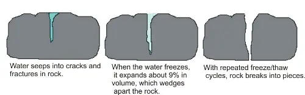
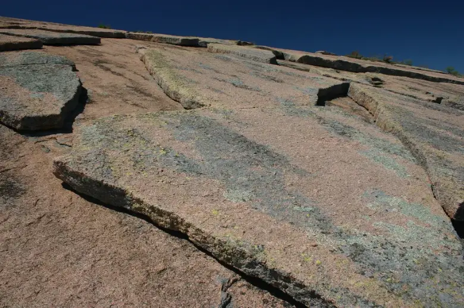
Phong hóa bóc vỏgranit bong lớp ngoài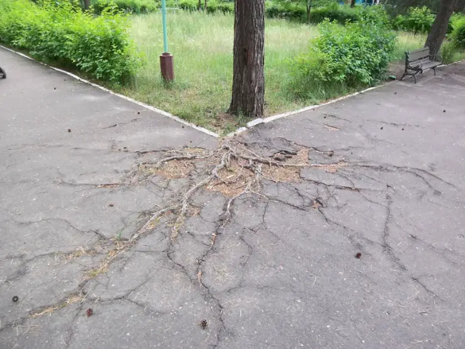
Nêm rễ câyrễ cây làm nứt nhựa đường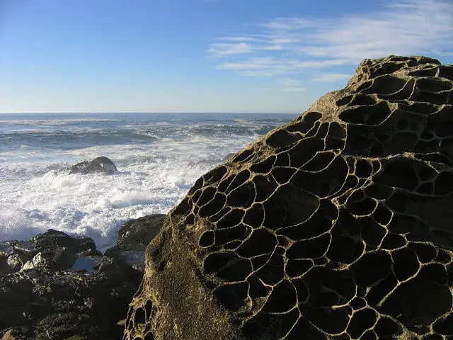
TafoniSalt Point, California
5.2.2 Phong hóa hóa học
(chemical weathering) chiếm ưu thế ở môi trường nóng ẩm. Nước, oxy và các chất phản ứng khác phân hủy khoáng vật của đá gốc thành các ion tan trong nước mà nước có thể mang đi. Nhiệt độ càng cao, quá trình càng nhanh.
Hai kiểu phong hóa phối hợp với nhau thông qua (surface-area-to-volume ratio). Phong hóa hóa học chỉ tác động lên bề mặt, vì nước và chất phản ứng không vào được bên trong khối đá rắn. Phong hóa cơ học làm đá vỡ thành mảnh nhỏ hơn và tạo ra bề mặt mới, nên diện tích tiếp xúc tăng. Tỷ lệ diện tích bề mặt trên thể tích càng cao thì phong hóa chung càng nhanh (Hình 5.5).
Acid carbonic và thủy phân
(carbonic acid, H2CO3) hình thành khi carbon dioxit hòa tan trong nước. Điều này xảy ra tự nhiên trong mây, nên nước mưa bình thường hơi có tính acid. Acid carbonic thúc đẩy hai phản ứng phong hóa: thủy phân và hòa tan.
(hydrolysis) diễn ra theo hai cách. Phân tử nước có thể phân ly thành ion H+ và OH− thay thế các cation trong mạng tinh thể khoáng vật, hoặc acid carbonic có thể phản ứng trực tiếp với khoáng vật giàu silic và nhôm, như fenspat, để tạo (clay minerals) (Hình 5.6). Thủy phân là quá trình chính phá hủy đá silicat và tạo ra sét.
Khoáng vật sét là silicat dạng tấm (silicat lớp, Học phần 3) tương tự mica và là thành phần chính của trầm tích hạt rất mịn. Các sản phẩm hòa tan về sau có thể kết tủa thành đá trầm tích hóa học như evaporit, đá vôi, silica vô định hình hoặc kết hạch chert.
Hòa tan
(dissolution) là một phản ứng thủy phân làm khoáng vật tan ra, để lại các ion trong dung dịch, thường là nước. Evaporit và carbonat như muối và canxit tan dễ nhất, nhưng mọi khoáng vật đều có thể tan. Nước trung tính (pH 7) hòa tan được mọi khoáng vật, dù chậm; nước có tính acid mạnh hơn, tự nhiên hay nhân tạo, tác động nhanh hơn. Nước lỏng bình thường hơi có tính acid do acid carbonic và ion H+ tự do. Các sinh vật như địa y và vi khuẩn đẩy nhanh sự hòa tan bằng cách tiết acid hữu cơ lên đá, và vùng ẩm, mưa nhiều hòa tan nhiều đá hơn vì nước và đá tiếp xúc lâu hơn.
(Goldich Dissolution Series) liên hệ tốc độ phong hóa với dãy phản ứng Bowen (Học phần 4): khoáng vật kết tinh sớm nhất, ở nhiệt độ cao, bị phong hóa nhanh nhất (Hình 5.7). Olivin và pyroxen mafic (khoảng 1.250 °C) bị phong hóa nhanh và triệt để và hiếm khi gặp trong sản phẩm phong hóa, vì chúng bị phân hủy thành ion. Thạch anh felsic (khoảng 700 °C) rất bền.
Ở nơi có nhiều đá gốc carbonat, sự hòa tan tạo ra (karst topography), với hố sụt và hang động (xem Chương 10). Hang Timpanogos ở bắc Utah hình thành do hòa tan rồi kết tủa: nước ngầm bão hòa canxit thấm vào hang, và sự bốc hơi làm khoáng vật kết tủa thành thạch nhũ.
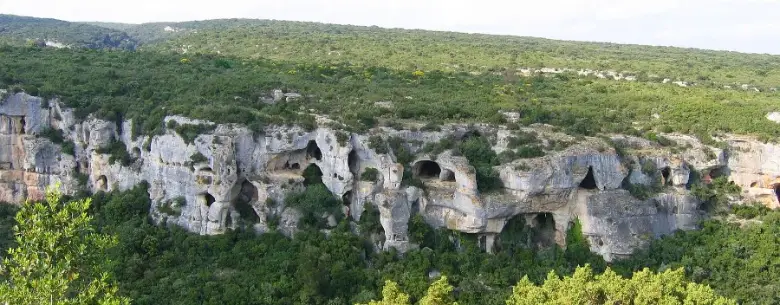
KarstMinerve, Pháp Hòa tan rồi kết tủa"Trái tim lớn" ở hang Timpanogos, Utah
Hòa tan rồi kết tủa"Trái tim lớn" ở hang Timpanogos, Utah
Oxy hóa
(oxidation), phản ứng làm sắt kim loại bị gỉ, xảy ra trong đá khi nguyên tử sắt trong khoáng vật liên kết với oxy; mọi khoáng vật chứa sắt đều có thể bị oxy hóa. Kết quả là ba khoáng vật phổ biến: hematit đỏ hoặc xám, goethit nâu và limonit vàng. Các oxit sắt này có thể bao phủ và gắn kết các hạt với nhau (, cementation) và thường tạo màu cho đá, như ở cao nguyên Colorado, Zion, Arches và Grand Canyon. Oxit bền với phong hóa có thể tạo kết hạch sắt; oxit kém bền để lại khoảng trống bên trong đá và hốc trên bề mặt đá.
 Hòa tanhốc lập phương do pyrit để lại, có hạt vàng
Hòa tanhốc lập phương do pyrit để lại, có hạt vàng Thủy phân + oxy hóaolivin biến đổi thành iddingsit
Thủy phân + oxy hóaolivin biến đổi thành iddingsit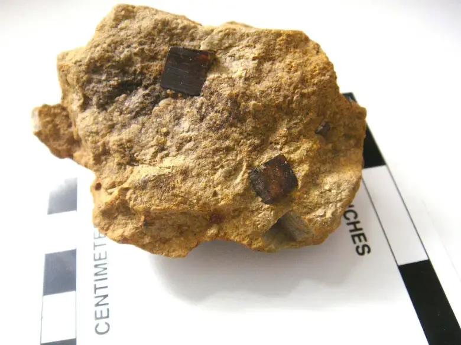
Oxy hóakhối pyrit biến thành goethit
5.2.3 Xói mòn
Xói mòn là quá trình cơ học mang trầm tích khỏi nơi nó bị phong hóa. Tác nhân thường là nước, gió, băng (sông băng, Chương 14) hoặc trọng lực (chuyển động khối, Chương 10); nước lỏng là tác nhân chính. (erosion resistance) tạo nên các dạng địa hình đặc trưng. Vách đá ở Grand Canyon là phần đá còn đứng lại sau khi vật liệu kém bền hơn bị phong hóa và xói mòn đi, và các loại đá có độ bền khác nhau tạo nên các (hoodoo) ở Vườn quốc gia Bryce Canyon và Công viên bang Goblin Valley, Utah.

5.2.4 Đất
(soil) là hỗn hợp không khí, nước, khoáng vật và chất hữu cơ, hình thành nơi sinh quyển gặp địa quyển. Phong hóa biến đá gốc thành trầm tích; nếu xói mòn không mang nó đi, sinh vật dùng khoáng vật, nước và khí quyển trong đó để tạo các chất hữu cơ trở thành một phần của đất.
Phần hữu cơ của đất, (humus), là nguồn nitơ dễ sử dụng dồi dào. Nitơ là nguyên tố phổ biến nhất trong khí quyển, nhưng ở dạng mà phần lớn sinh vật không dùng được. (nitrogen-fixing bacteria) trong đất lấy nitơ từ không khí và tạo hợp chất nitơ; thực vật hấp thụ chúng để tạo DNA, amino acid và enzyme, còn động vật lấy nitơ bằng cách ăn thực vật (Hình 5.11). Độ phì của đất phụ thuộc vào lượng nước và chất dinh dưỡng: đất núi lửa trẻ () và đất giàu sét giữ được dinh dưỡng và nước là đất phì nhiêu.
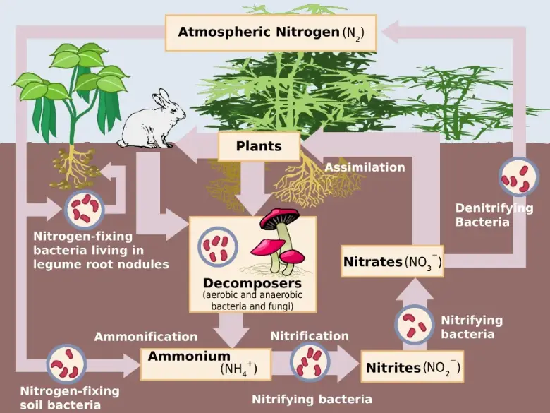
Năm yếu tố chính quyết định tính chất của đất: (1) thành phần khoáng vật của (parent material), (2) địa hình, (3) phong hóa, (4) khí hậu và (5) sinh vật sống trong đất. Ví dụ, đất trên sườn dốc bị xói mòn nhanh hơn, nên mỏng hơn đất ở đồng bằng ngập lũ, nơi đất tích tụ lại.
Đất phát triển tốt có các lớp rõ rệt gọi là (soil horizon), thường thấy ở vách đường cắt; tất cả hợp thành (soil profile) (Hình 5.12). Cách đặt tên khác nhau tùy vùng, loại đất và hướng nghiên cứu.
- Tầng O: lớp mỏng chủ yếu là vật liệu hữu cơ như lá và cành nhỏ, đang phân hủy thành mùn.
- Tầng A: (topsoil), gồm mùn trộn với trầm tích khoáng. Nước thấm xuống rửa trôi các chất hòa tan; ở khí hậu ẩm, quá trình này tạo thành một tầng E riêng, đới rửa trôi (, eluviation).
- Tầng B: (subsoil), trầm tích trộn với mùn bị rửa trôi từ trên xuống; trầm tích khoáng bị phong hóa hóa học ở đây. Chất hữu cơ và mức độ phong hóa giảm dần theo độ sâu.
- Tầng C: (substratum), đới phong hóa cơ học, nơi các mảnh đá gốc bị vỡ nhưng chưa biến đổi hóa học. Không có vật liệu hữu cơ.
- Tầng R: đá gốc mẹ chưa bị phong hóa và các mảnh của nó.
Chương sách còn chia tầng B thành đới trên, gọi là (regolith; mùn xốp và trầm tích phong hóa mạnh), và đới dưới, gọi là (saprolite; ít chất hữu cơ, trộn với đá mẹ phần lớn chưa biến đổi). Phần lớn tài liệu dùng hai từ này theo nghĩa rộng hơn; xem Ghi chú kiểm chứng.
Bộ Nông nghiệp Hoa Kỳ (USDA) phân loại đất thành các (soil order). Oxisol (đất , laterite) là đất nhiệt đới nghèo dinh dưỡng, kém cho trồng trọt nhưng chứa phần lớn quặng nhôm khai thác được trên thế giới, (bauxite). Aridisol hình thành ở khí hậu khô và có thể phát triển các lớp canxit cứng gọi là (caliche). Andisol hình thành từ tro núi lửa, còn alfisol chứa khoáng vật sét silicat; cả hai đều phì nhiêu cho nông nghiệp. Màu sắc là manh mối hữu ích trong đất và nhiều đá trầm tích: màu đen thường chỉ môi trường thiếu oxy hoàn toàn, màu đỏ giàu oxy, màu lục nghèo oxy (môi trường khử).
Nghiên cứu điển hình: Dust Bowl ("Lòng chảo bụi")
Vào thập niên 1930, những người khai hoang được chính phủ khuyến khích đã cày đồng cỏ ở nam Kansas, Colorado, tây Texas và Oklahoma thành những luống dài, thẳng chạy xuôi dốc. Việc cày xới phá vỡ phẫu diện đất ổn định và tiêu diệt các loài cỏ bản địa rễ sâu vốn giữ đất; các cây ngũ cốc thay thế có rễ nông và bị cày lại mỗi năm. Khí hậu khô không nuôi nổi cây ngũ cốc, nông dân bơm cạn tầng chứa nước, mùa màng thất bát, và gió đồng cỏ cuốn đi lớp đất mặt trơ trụi. Những cơn bão bụi khổng lồ ("bão tuyết đen") mang đất tới bờ đông và xa đến tận châu Âu, và người khai hoang bỏ đi hàng loạt. Đây là bối cảnh của tiểu thuyết Chùm nho uất hận (The Grapes of Wrath) của Steinbeck.
 Bauxitvới lõi đá magma chưa phong hóa
Bauxitvới lõi đá magma chưa phong hóa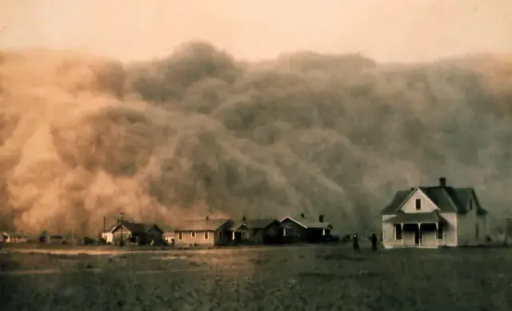
Bão bụiStratford, Texas, 1935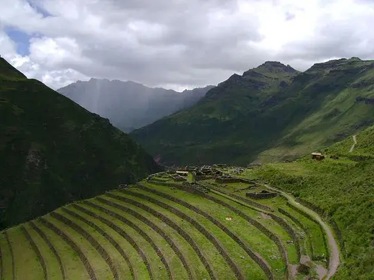
Ruộng bậc thangruộng bậc thang Inca giảm xói mòn
Tự kiểm tra: Câu hỏi Mục 5.2 trong giáo trình (tiếng Anh) ↗
5.3Đá trầm tích
Đá trầm tích có hai nhóm chính. Đá hay cấu tạo từ các mảnh đá gốc, chủ yếu do phong hóa cơ học (có thể lẫn một ít trầm tích phong hóa hóa học); chúng được phân loại theo độ hạt, hình dạng hạt và độ chọn lọc. (chemical sedimentary rock) kết tủa từ nước bão hòa khoáng vật hòa tan và được phân loại chủ yếu theo thành phần khoáng vật.
5.3.1 Thạch hóa và quá trình thành đá
(lithification; còn gọi là đá hóa) biến trầm tích bở rời thành đá vụn qua ba bước nối tiếp (Hình 5.14):
- (deposition): ma sát và trọng lực thắng các lực đang vận chuyển trầm tích, nên trầm tích lắng xuống và tích tụ.
- (compaction): thêm vật liệu chồng lên trên, ép các hạt sát nhau và đẩy nước ra. Lực hút yếu giữa các hạt nhỏ góp phần vào quá trình này.
- Xi măng hóa: nước ngầm mang các khoáng vật gắn kết như canxit, silica vô định hình hoặc oxit vào trầm tích. Chúng bao phủ các hạt và gắn chúng thành đá rắn, và có thể khác thành phần với các hạt.
(diagenesis) đi kèm thạch hóa. Đây là một dạng biến chất nhiệt độ thấp (Chương 6), trong đó nhiệt và áp suất làm biến đổi hóa học trầm tích. Ví dụ, aragonit (CaCO3), thành phần chính của phần lớn vỏ sinh vật, chuyển về canxit (cùng công thức, khác cấu trúc tinh thể); khi có magie, canxit có thể biến thành dolomit (CaMg(CO3)2). Quá trình thành đá cũng có thể làm giảm (pore space), khoảng trống giữa các hạt. Xi măng hóa, nén ép và thạch hóa đều diễn ra trong phạm vi quá trình thành đá, quá trình này cũng biến vật liệu hữu cơ thành hóa thạch.

5.3.2 Đá trầm tích vụn
Đá vụn cấu tạo từ các mảnh đá gốc có trước đã bị phong hóa. Phần lớn bị phong hóa cơ học, nhưng một số mảnh vụn có thể là mảnh đá hóa học, nên hai nhóm có phần chồng lấn. Đá vụn được đặt tên theo độ hạt.
Độ hạt
(grain size) là đường kính trung bình của các mảnh trong trầm tích hoặc đá. (Wentworth scale) chia độ hạt từ lớn đến nhỏ theo thang cơ số 2 (log2), nên mỗi ranh giới cấp bằng một nửa ranh giới cấp trên (Bảng 5.2). Mảnh lớn hơn 2 mm gọi là (clast), gọi chung là sỏi sạn (gravel). Cát (2 đến 0,0625 mm) xấp xỉ cỡ nhỏ nhất mắt thường còn thấy được. Bột có thể cảm thấy lạo xạo giữa hai hàm răng nhưng quá nhỏ để nhìn thấy; sét còn mịn hơn.
| Cấp | Đường kính (mm) | Đá vụn |
|---|---|---|
| Tảng | > 256 | Cuội kết (mảnh tròn cạnh) hoặc dăm kết (mảnh sắc cạnh) |
| Cuội | 64–256 | |
| Sỏi | 4–64 | |
| Sạn | 2–4 | |
| Cát | 1/16–2 (0,0625–2) | Cát kết |
| Bột | 1/256–1/16 (0,004–0,0625) | Bột kết |
| Sét | < 1/256 (< 0,004) | Sét kết |
Bột và sét gộp lại là bùn; đá của chúng là bùn kết và, nếu tách thành tấm mỏng, đá phiến sét. Ranh giới các cấp theo phiên bản của USGS (xem Ghi chú kiểm chứng). Tên tiếng Việt các cấp hạt (tảng, cuội, sỏi, sạn) chưa tìm được đối chiếu chính thức cho từng cấp Wentworth.
Độ chọn lọc và độ mài tròn
(sorting) mô tả khoảng độ hạt: chọn lọc tốt nghĩa là khoảng hẹp, chọn lọc kém nghĩa là khoảng rộng (Hình 5.16). Kỹ sư địa kỹ thuật dùng những từ tương tự với nghĩa ngược lại: "cấp phối tốt" có nhiều cỡ hạt, "cấp phối kém" có cỡ hạt gần như đồng nhất.
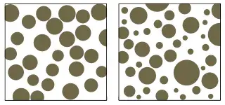
Độ chọn lọc cho biết năng lượng vận chuyển và lắng đọng. Cát do gió mang đi được chọn lọc cực tốt, còn trầm tích băng hà chọn lọc kém. Trầm tích thô, chọn lọc kém thường nằm gần nguồn, còn trầm tích mịn được mang đi xa hơn: một dòng suối núi chảy xiết chứa tảng và sỏi, còn hồ mà nó đổ vào chứa cát và bột. Tảng lớn trong hồ đó sẽ cho thấy một quá trình khác, như đá lở do băng hoặc nêm rễ cây.
(rounding) là sự mất các góc sắc do mài mòn trong quá trình vận chuyển (Hình 5.17). Hạt mài tròn tốt không còn cạnh sắc; hạt rất sắc cạnh vẫn giữ các góc. Độ mài tròn càng cao cho thấy thời gian hoặc quãng đường vận chuyển càng dài, hoặc quá trình càng mạnh; độ cứng khoáng vật cũng ảnh hưởng. (sphericity), mức độ gần với hình cầu của hạt, là một phép đo riêng.

Thành phần và nguồn gốc vật liệu
(composition) là các khoáng vật trong trầm tích hoặc đá, chịu ảnh hưởng của địa chất địa phương như đá nguồn và chế độ thủy văn. Thạch anh là khoáng vật phổ biến nhất trong trầm tích: nó trơ về hóa học, cứng và có mặt khắp nơi trong đá gốc lục địa. Fenspat và (lithic fragment; mảnh đá gốc hạt mịn như mảnh bùn, mảnh núi lửa hoặc đá phiến lợp) cũng phổ biến. Bãi cát đen (bazan) và cát lục (olivin) ở Hawaii hiếm gặp vì đá địa phương gần như toàn là bazan; theo dãy Goldich, các mảnh mafic như vậy bị phá hủy dễ hơn mảnh felsic.
(provenance) là nguồn ban đầu của trầm tích, được xác định từ khoáng vật, hóa thạch và kiến trúc như độ chọn lọc và độ mài tròn. Nó giúp mô tả lịch sử kiến tạo, cổ địa lý và các siêu lục địa trong quá khứ. Trong cát kết thạch anh (arenit thạch anh), khoáng vật hiếm và bền (ZrSiO4) chứa vết urani có thể dùng để định tuổi đá gốc nguồn (Chương 7).
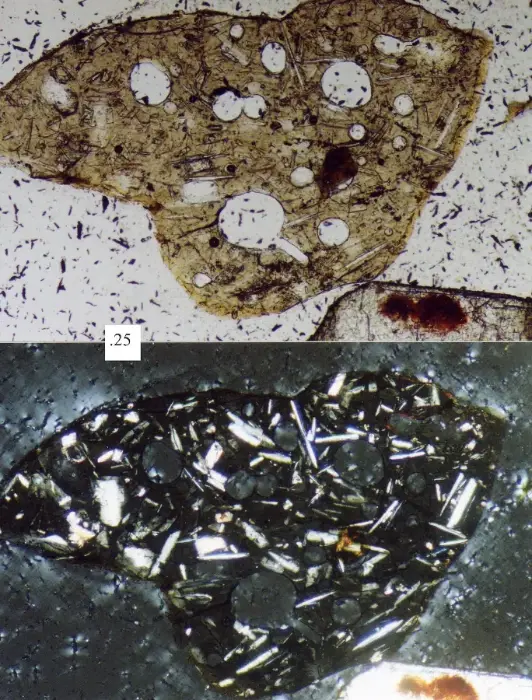
Mảnh đá núi lửahạt cát bazan dưới kính hiển vi (khung 0,25 mm)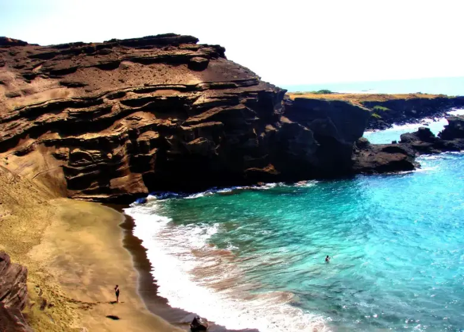
Bãi cát lụccát olivin, Hawaii
Phân loại đá vụn
- Hạt thô: mảnh vụn phần lớn lớn hơn cát, được gắn với nhau bởi các hạt nhỏ hơn gọi là (matrix, groundmass). (conglomerate) có mảnh tròn cạnh, (breccia) có mảnh sắc cạnh; cả hai thường chọn lọc kém.
- Hạt trung bình: chủ yếu là cát. (sandstone), hoặc (arenite) nếu chọn lọc tốt. Cát kết thạch anh chủ yếu là thạch anh. (arkose) có nhiều fenspat, thường trên 25%; vì fenspat phong hóa nhanh hơn thạch anh, arkos giúp làm sáng tỏ lịch sử địa chất địa phương. (greywacke) có các định nghĩa mâu thuẫn: cát kết có chất nền bùn, hoặc cát kết có nhiều mảnh đá.
- Hạt mịn: (mudstone) là thuật ngữ chung cho đá có hạt nhỏ hơn cát. Đá tách thành tấm mỏng (, fissility) là (shale). Đá chỉ gồm bột là (siltstone) và chỉ gồm sét là (claystone); hai loại này hiếm hơn bùn kết và đá phiến sét.
Hỗn hợp được đặt tên bằng cách dùng thành phần ít hơn làm từ bổ nghĩa: chủ yếu là cát và sỏi tròn cạnh với một ít bột là cuội kết chứa bột; cát với một ít sét là cát kết chứa sét.
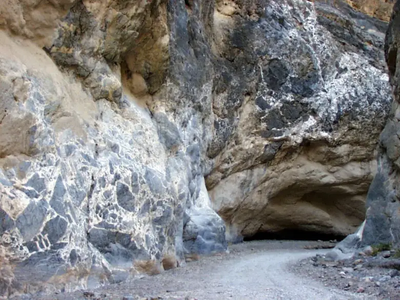
Đại dăm kếthẻm Titus, Thung lũng Chết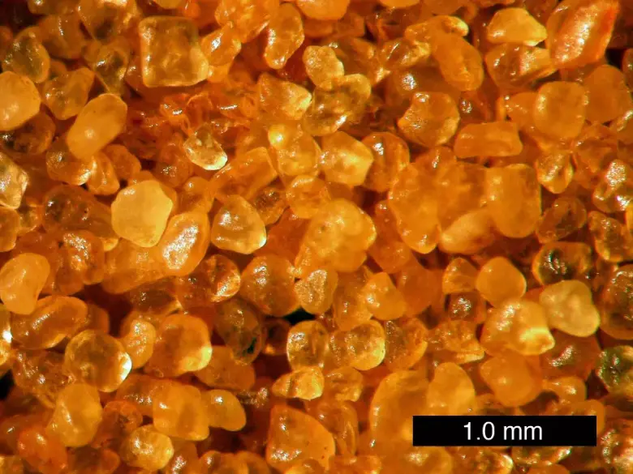
Cáthạt do gió mang, tròn và mờ mặt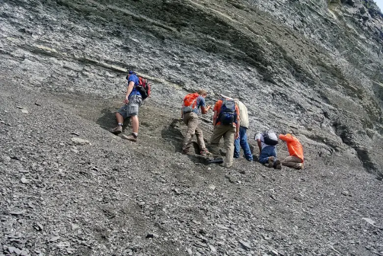
Đá phiến sétĐá phiến sét Rochester, New York, với các lớp mỏng dễ tách Sét kếtcác lớp mỏng từ hồ băng Missoula
Sét kếtcác lớp mỏng từ hồ băng Missoula
5.3.3 Đá hóa học, sinh hóa và hữu cơ
Đá trầm tích hóa học hình thành không cần phong hóa cơ học và xói mòn trực tiếp, dù phong hóa hóa học có thể cung cấp vật chất hòa tan. Có ba nhóm:
- Hóa học vô cơ: khoáng vật kết tủa từ ion hòa tan mà không có sinh vật, ở nơi nồng độ ion, khí hòa tan, nhiệt độ hoặc áp suất thay đổi.
- (biochemical): vỏ và cơ thể sinh vật dưới nước, vốn lấy aragonit (thường về sau bị canxit thay thế) hoặc silica từ nước.
- (organic): xác thực vật và động vật lắng đọng (thường dưới nước), bị chôn vùi, nung nóng và thạch hóa thành than đá, dầu mỏ và khí thiên nhiên (methan).
Về mặt kỹ thuật, trầm tích sinh hóa và hữu cơ là trầm tích vụn, vì chúng là mảnh vật liệu hữu cơ, nhưng thường được xếp vào nhóm hóa học.
Đá hóa học vô cơ
Phần lớn hình thành khi sự bốc hơi làm khoáng vật kết tủa từ nước thành các muối gọi là (evaporite). Bãi muối Bonneville ở Utah ngập nước mưa mùa đông và khô cạn mỗi mùa hè, để lại thạch cao và halit. Khoáng vật kết tủa theo thứ tự ngược với độ tan: khi nước bốc hơi, chất kém tan nhất kết tủa trước (Hình 5.20, Bảng 5.3). Giá trị trong tự nhiên khác các giá trị phòng thí nghiệm này.
| Khoáng vật (theo thứ tự) | Lượng nước biển còn lại sau bốc hơi |
|---|---|
| Canxit | 50% |
| Thạch cao / anhydrit | 20% |
| Halit | 10% |
| Muối kali và magie | 5% |
- (tufa): canxit xốp kết tủa từ nước bão hòa calci carbonat, gần nơi nước thoát khí và trong hồ mặn. Ở thác nước bên dưới các mạch suối, dòng chảy rối giải phóng CO2, làm canxit kém tan hơn. Các tháp tufa ở hồ Mono lộ ra khi việc chuyển dòng nước làm mực nước hồ hạ xuống.
- (travertine): canxit phân dải tạo thạch nhũ trong hang (nhũ đá, măng đá) và các bậc thềm suối nước nóng như Mammoth Hot Springs, Yellowstone; tương tự cặn mà nước cứng để lại trên vòi nước.
- (banded iron formation): oxit sắt thành dải xen kẽ với chert, hình thành sớm trong lịch sử Trái Đất khi oxy trong khí quyển và đại dương oxy hóa sắt hòa tan làm nó kết tủa. Ngày nay nó không còn hình thành.
- (chert): silica (SiO2) thường kết tủa từ nước ngầm. Silica hầu như không tan ở bề mặt (vì thế thạch anh bền với phong hóa), nhưng nước nóng, chịu áp suất ở sâu hòa tan được nó; khi nước dâng lên, silica kết tủa thành xi măng hoặc kết hạch. Quanh các mạch phun nước nóng ở Yellowstone, nó tạo (geyserite, sinter). Jasper, đá lửa (flint), onyx và agat là các biến thể; nhà địa chất dùng "chert" cho cả nhóm.
- (oolite): một trong số ít đá vôi vô cơ. Canxit kết tủa quanh một nhân (hạt cát hoặc mảnh vỏ) thành các hạt cầu nhỏ gọi là (ooid), lớn thêm từng lớp đồng tâm khi dòng chảy nhẹ lăn chúng.
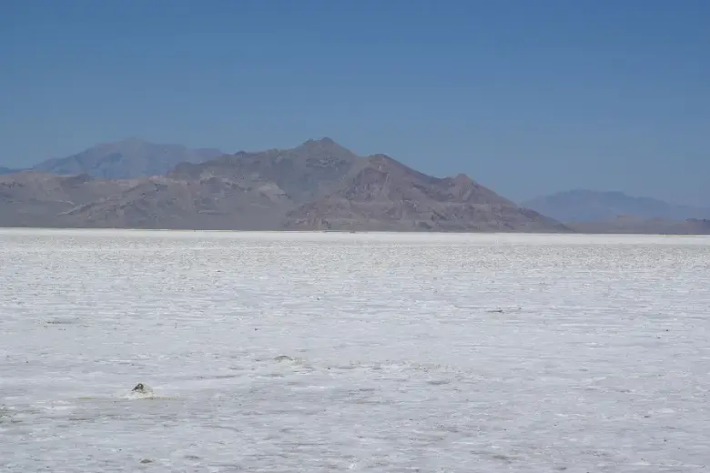
EvaporitBãi muối Bonneville, Utah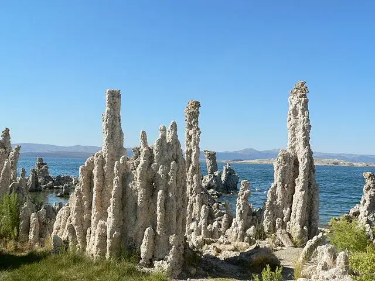
Tufa vôihồ Mono, California TravertinMammoth Hot Springs
TravertinMammoth Hot Springs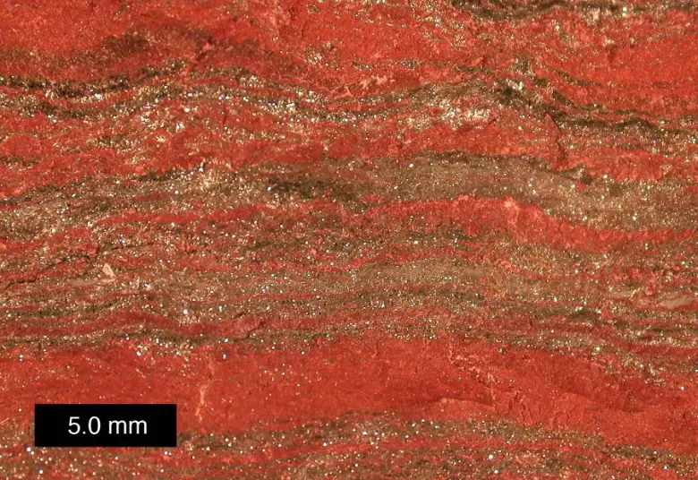
Thành hệ sắt dảiMichigan Đá lửamột loại chert có vỏ phong hóa
Đá lửamột loại chert có vỏ phong hóa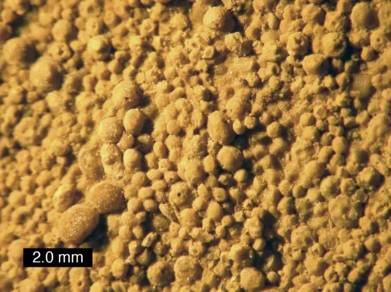
Đá vôi trứng cáooid gắn kết thành đá
Đá sinh hóa
Sinh vật lấy khoáng vật hòa tan, chủ yếu là aragonit, để tạo vỏ và các phần cứng khác. Khi chúng chết, phần cứng lắng xuống, bị chôn vùi, nén ép và xi măng hóa. Đây là con đường chính hình thành (limestone), loại đá trầm tích không vụn phổ biến nhất. Đá vôi chủ yếu là canxit (CaCO3), đôi khi có dolomit là khoáng vật gần gũi. Canxit sủi bọt trong acid hydrochloric; dolomit chỉ sủi bọt khi ở dạng bột, ví dụ khi bị cào xước (Học phần 3).
- Đá vôi chứa hóa thạch có nhiều hóa thạch nhìn thấy được; cả rạn san hô có thể được bảo tồn chi tiết.
- (coquina) là cát bãi biển đã thạch hóa, chủ yếu là vỏ và mảnh vỏ gắn kết lỏng lẻo, giống các bãi biển hiện đại ở Bahamas.
- (chalk) giàu vỏ của một vi sinh vật, tảo cầu vôi (coccolithophore).
- (micrite; bùn canxit hiển vi) là đá vôi rất mịn với vi hóa thạch chỉ thấy dưới kính hiển vi.
- Chert sinh học hình thành ở đáy đại dương sâu từ (ooze), trầm tích gồm các vỏ hiển vi. Tùy loại vỏ, bùn là bùn vôi (calci carbonat) hoặc bùn silic (silica, từ trùng phóng xạ và tảo cát).
Đá hữu cơ
Vật liệu hữu cơ có thể được bảo tồn trong các tầng trầm tích nhờ cùng các quá trình chôn vùi, nén ép và quá trình thành đá, dù nó không phải trầm tích. Đầm lầy rậm rạp có thể tạo (coal); trầm tích biển nông giàu vật liệu hữu cơ có thể trở thành mỏ dầu mỏ và khí thiên nhiên (Chương 16).
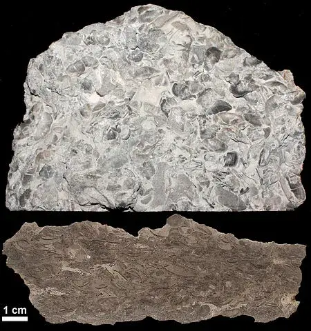
Đá vôi chứa hóa thạchtay cuộn và động vật hình rêu, thành hệ Kope, Ohio Coquinavỏ sò gắn kết
Coquinavỏ sò gắn kết Than antracitloại than có hạng cao nhất
Than antracitloại than có hạng cao nhất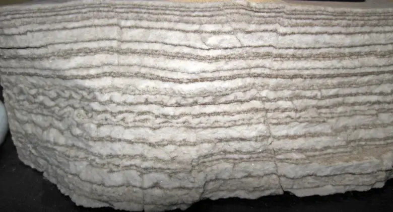
Đá thạch caothành hệ Castile, New Mexico
Phân loại đá hóa học
Khác với đá vụn, đá hóa học, sinh hóa và hữu cơ được phân loại theo thành phần khoáng vật. Phần lớn là đá (monomineralic; một khoáng vật), nên đá được đặt tên theo khoáng vật của nó (Bảng 5.4). Đá vôi là ngoại lệ, với hai hệ thống cạnh tranh: phân loại Folk, dựa trên hạt và thường cần kính hiển vi thạch học, và phân loại Dunham, dựa trên kiến trúc nhìn thấy bằng mắt thường hoặc kính lúp. Phần lớn nhà địa chất carbonat dùng phân loại Dunham.
| Thành phần chính | Đá | Nguồn gốc |
|---|---|---|
| Canxit (CaCO3) | Đá vôi: chứa hóa thạch, coquina, đá phấn, micrit, đá vôi trứng cá, tufa vôi, travertin | Sinh hóa (phần lớn) hoặc vô cơ (đá vôi trứng cá, tufa, travertin) |
| Dolomit (CaMg(CO3)2) | Đá dolomit | Quá trình thành đá của đá vôi |
| Halit (NaCl) | Đá muối | Evaporit |
| Thạch cao | Đá thạch cao | Evaporit |
| Silica (SiO2) | Chert (đá lửa, jasper…), geyserit | Vô cơ hoặc sinh hóa (bùn silic) |
| Oxit sắt + chert | Thành hệ sắt dải | Vô cơ, Trái Đất sơ khai |
| Xác thực vật | Than đá | Hữu cơ |
Trong tiếng Anh, "dolostone" là tên thường dùng cho đá dolomit; chương sách dùng "dolomite" cho cả khoáng vật lẫn đá.
Tự kiểm tra: Câu hỏi Mục 5.3 trong giáo trình (tiếng Anh) ↗
5.4Cấu tạo trầm tích
(sedimentary structure) là các kiến trúc hoặc cách sắp xếp trầm tích nhìn thấy được trong đá. Dựa trên thuyết đồng nhất, nhà địa chất so sánh chúng với các cấu tạo đang hình thành trong môi trường hiện đại để suy ra đá cổ hình thành thế nào và ở đâu.
5.4.1 Mặt lớp
(bedding plane) ngăn cách các lớp (tầng) trong đá trầm tích và một số đá núi lửa. Mỗi mặt lớp đánh dấu một thay đổi điều kiện lắng đọng, có khi rất nhỏ, như trầm tích bên dưới cứng lại. Mỗi lớp là một (bed) hay (stratum), đơn vị cơ bản của (stratigraphy), ngành nghiên cứu sự phân lớp trầm tích. Một lớp dày hơn 1 cm và là đơn vị nhỏ nhất có thể vẽ trên bản đồ; lớp mỏng hơn 1 cm là . (varve) là các lớp mỏng và lớp lắng đọng theo chu kỳ lặp lại; chúng ghi lại lịch sử khí hậu, nhất là trong hồ và trầm tích băng hà.

5.4.2 Phân lớp phân cấp
(graded bedding) là một lớp có hạt mịn dần (hoặc thô dần) lên trên, thường lắng đọng khi năng lượng giảm. (Bouma sequence) là phân lớp phân cấp của một (turbidite) (Hình 5.24). Nó hình thành từ các dòng trọng lực trầm tích ngoài khơi: một sự kiện mạnh khuấy trầm tích thành hỗn hợp sệt đặc, chảy xuống các lòng dẫn và hẻm ngầm vì đặc hơn nước biển. Khi tới các bồn sâu hơn, dòng chậm lại và thả hạt thô trước, rồi đến hạt mịn hơn.
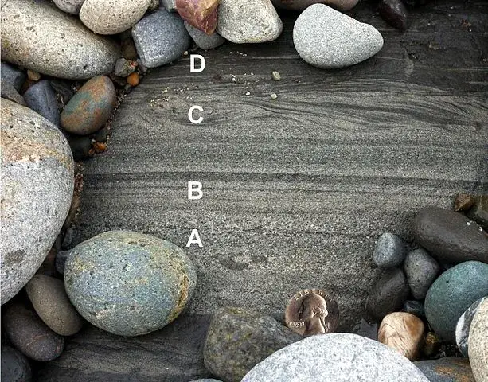
5.4.3 Chế độ dòng chảy và dạng đáy
Trong nước hoặc gió chuyển động, cát là loại hạt dễ được vận chuyển và lắng đọng nhất. Hạt bột và sét hút nhau và dính vào đáy, nên ở dòng chảy mạnh hơn chúng vẫn nằm yên trong khi cát di chuyển. (bedform) là các cấu tạo do dòng chất lưu chảy trên cát tạo ra. Hình dạng của chúng phụ thuộc vào độ hạt, vận tốc và (flow regime), được chia thành chế độ dưới và chế độ trên, mỗi chế độ lại chia nhỏ hơn (Bảng 5.5, Hình 5.26).
| Chế độ dòng chảy (phần) | Dạng đáy | Mô tả |
|---|---|---|
| Dưới (thấp nhất) | Đáy phẳng | Đáy phẳng chế độ dưới, các lớp mỏng nằm ngang |
| Dưới (phần dưới) | Gợn sóng | Các lớp nghiêng nhỏ nghiêng về phía xuôi dòng |
| Dưới (phần trên) | Đụn | Các lớp xiên lớn hơn, có thể kèm gợn sóng, nghiêng về phía xuôi dòng |
| Trên (phần dưới) | Đáy phẳng | Các lớp phẳng; có thể có đường phân tách |
| Trên (phần trên) | Phản đụn | Đụn ngược khó bảo tồn, nghiêng thoải về phía ngược dòng |
| Trên (cao nhất) | Máng và vũng (hiếm) | Do bào mòn; thực ra không phải dạng đáy; hiếm khi được bảo tồn |

Đáy phẳng
Đáy phẳng chế độ dưới là các lớp phẳng, song song, giống sự phân lớp quy mô nhỏ, và có thể hình thành cả trong nước tĩnh như hồ. Đáy phẳng chế độ trên hình thành trong dòng chảy nhanh và có thể trông giống hệt, nhưng thường có (parting lineation): các hạt hơi xếp thẳng hàng thành dải, do tốc độ vận chuyển cao của chế độ dòng chảy trên.

Gợn sóng
(ripple; còn gọi là vết gợn sóng, lớp xiên gợn sóng) là các gờ hình thành khi hạt chồng lên nhau trên đáy phẳng, thường có quy mô vài cm, dù các trận lũ vỡ hồ băng đã tạo ra gợn sóng cao tới 20 m. Được Hertha Ayrton mô tả khoa học lần đầu, gợn sóng có thể có đỉnh thẳng, lượn khúc hoặc phức tạp (Hình 5.28). Gợn sóng bất đối xứng hình thành trong dòng chảy một chiều; gợn sóng đối xứng hình thành trong dòng chảy qua lại, điển hình ở đới sóng vỗ vùng triều. (climbing ripples) hình thành khi tốc độ trầm tích cao và trông như các gợn sóng chồng gối lên nhau.
 Gợn sóng dòng chảydòng chảy từ phải sang trái; sườn dốc hướng xuôi dòng
Gợn sóng dòng chảydòng chảy từ phải sang trái; sườn dốc hướng xuôi dòng Gợn sóng do sóngđối xứng, Nomgon, Mông Cổ
Gợn sóng do sóngđối xứng, Nomgon, Mông Cổ Gợn sóng leoẤn Độ
Gợn sóng leoẤn Độ
Đụn
(dune) là gợn sóng cỡ lớn và là ví dụ điển hình của (cross-bedding) lớn, hình thành khi gợn sóng hoặc đụn chồng lên nhau, cắt ngang hoặc cắt vào các lớp bên dưới. Đây là cấu tạo phổ biến nhất trong dòng chảy theo lòng dẫn của không khí hoặc nước. Đụn cát sa mạc cao hơn nhiều so với đụn sông vì khí quyển sâu hơn sông rất nhiều; ví dụ ở Sahara, Thung lũng Chết và Gobi.
Hạt tích tụ ở (windward), thoải hơn (leeward), nơi các hạt đổ xuống (Hình 5.30). Sự khác biệt độ dốc thể hiện trên mặt cắt và ghi lại hướng dòng chảy trong quá khứ. Lớp xiên dạng máng (mặt cong) phổ biến hơn lớp xiên dạng tấm (mặt phẳng). Dòng triều mạnh lên xuống tạo đụn theo hai hướng ngược nhau, cho ra (herringbone cross-bedding). Bão mạnh cỡ cuồng phong khuấy đáy biển vốn yên tĩnh tạo ra (hummocky cross-stratification), một kiểu gò và trũng ba chiều.
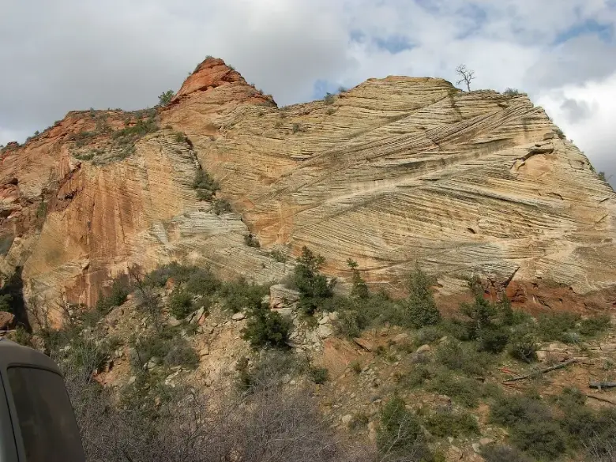
Cát kết phân lớp xiênđụn cát đã thạch hóa, Vườn quốc gia Zion, Utah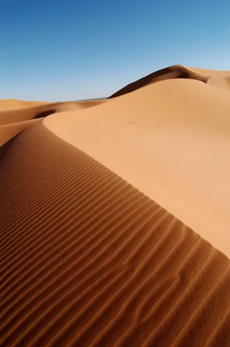
Đụn cát hiện đạiMaroc Phân lớp xiên xương cáthành hệ Mazomanie, Minnesota
Phân lớp xiên xương cáthành hệ Mazomanie, Minnesota Phân lớp xiên dạng gòcác lớp lượn sóng
Phân lớp xiên dạng gòcác lớp lượn sóng
Phản đụn
(antidune) trông giống đụn nhưng hình thành trong dòng chảy nhanh của chế độ trên, nơi trầm tích chồng lên ở phía thượng lưu của một chỗ trũng nhẹ thay vì di chuyển xuôi dòng. Chúng hình thành đồng pha với dòng chảy (biểu hiện bằng ghềnh trên sông) và hiếm khi được bảo tồn, vì dòng chảy nhanh như vậy cũng gây bào mòn.
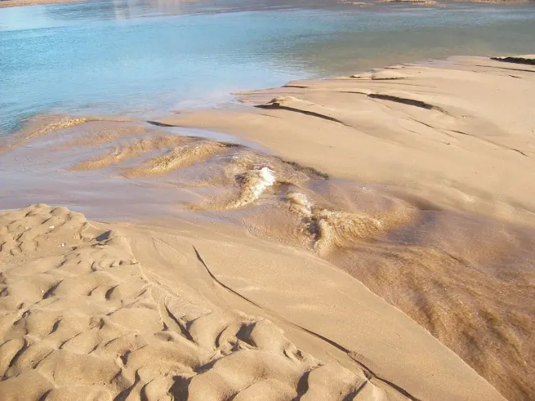
5.4.4 Các cấu tạo khác
- (bioturbation): sinh vật đào hang trong trầm tích mềm làm xáo trộn các lớp; các đường hang được lấp lại và bảo tồn. Phổ biến nhất ở môi trường biển nông và có thể chỉ thị độ sâu nước.
- (mudcracks): trầm tích giàu sét trương nở dưới nước rồi co lại khi khô, tạo các khe nứt đa giác hẹp dần xuống dưới. Trầm tích mới lấp đầy các khe. Chúng chỉ hình thành nơi trầm tích ở dưới nước rồi lộ ra, như bãi triều, và cung cấp các mảnh bùn gặp trong cát kết và cuội kết. (syneresis cracks) hiếm hơn, trông tương tự nhưng hình thành khi sét co lại ngay dưới nước.
- (sole marks): các dấu vết ở đáy (sole) một lớp, nằm trên mặt lớp bên dưới; chúng cho biết hướng dòng chảy hoặc phía nóc. (flute cast) lấp đầy các vết xói dốc ở phía thượng lưu và thoải ở phía hạ lưu. (groove cast) là các rãnh thẳng hơn do mảnh vụn lớn bị kéo lê trên đáy tạo ra. Vết công cụ (tool marks) do các vật như cành cây tạo ra. (load cast), một kiểu biến dạng trầm tích mềm, hình thành nơi trầm tích thô lún vào trầm tích mịn, mềm hơn bên dưới.
- (raindrop impressions): các hố nhỏ trên trầm tích mềm, thường do mưa nhưng cũng có thể do bọt khí thoát ra.
- (imbrication): các mảnh vụn dẹt, lớn xếp chồng như ngói lợp nghiêng, nghiêng và hướng về phía dòng chảy tới, hoặc nằm phẳng với trục dài song song với dòng. Dùng để xác định (paleocurrent), nhất là trong trầm tích bồi tích.
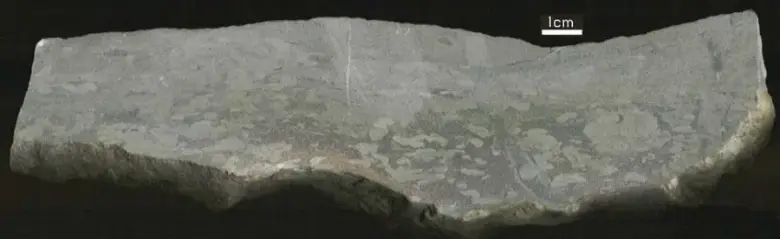
Xáo trộn sinh họcbột kết dolomit, Kentucky Khe nứt khôđã thạch hóa, Maryland
Khe nứt khôđã thạch hóa, Maryland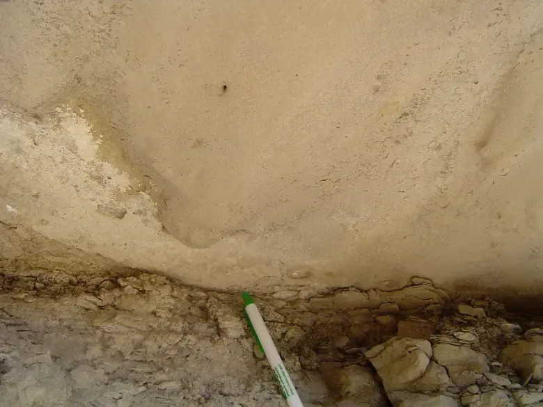
Khuôn xoáydòng chảy về phía trên bên phải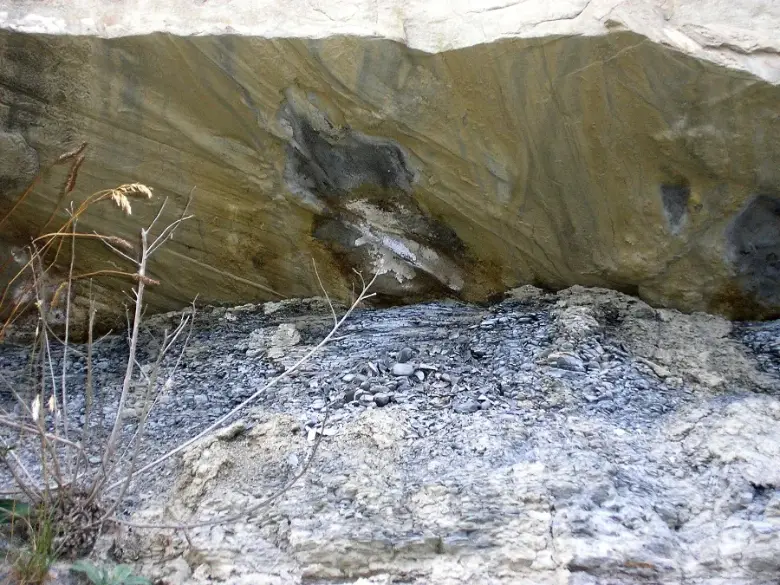
Khuôn rãnhđáy một turbidit, Ý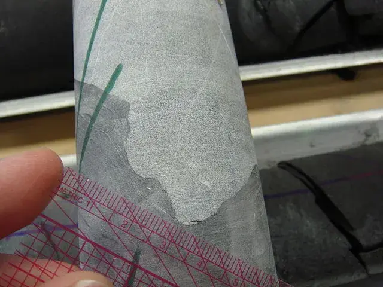
Khuôn tảicát sáng màu lún vào bùn sẫm Dấu giọt mưatrên gợn sóng do sóng, Nova Scotia
Dấu giọt mưatrên gợn sóng do sóng, Nova Scotia
5.4.5 Cấu tạo chỉ hướng nóc
(geopetal structure; dấu hiệu chỉ phía trên) cho biết phía nào là phía trên khi các lớp hình thành, điều quan trọng nơi đá bị nghiêng, biến dạng hoặc đảo ngược. Khe nứt khô, dấu vết đáy lớp và dấu giọt mưa được bảo tồn tốt đều dùng được, cùng với:
- : các khoảng trống nhỏ bị lấp đầy trong quá trình thành đá. Một hốc được lấp một phần, hoặc lấp theo từng giai đoạn, ghi lại một "ống thủy" bị đóng băng theo thời gian.
- Phân lớp xiên: nơi một tập lớp xiên cắt một tập bên dưới, quan hệ cắt nhau cho biết phía trên.
- Gợn sóng và đụn: khi được bảo tồn tốt, có thể phân biệt đỉnh (phía trên) với trũng (phía dưới).
- Hóa thạch: hóa thạch cơ thể ở tư thế sống, hóa thạch dấu vết như dấu chân, và rạn hóa thạch nguyên vẹn cho biết phía trên; hóa thạch chỉ đạo như cúc đá định tuổi các tầng và cho biết phía trên từ tuổi tương đối.
- Lỗ hổng: khí thoát lên trên qua dòng dung nham, nên lỗ hổng nhiều dần về phía nóc dòng.
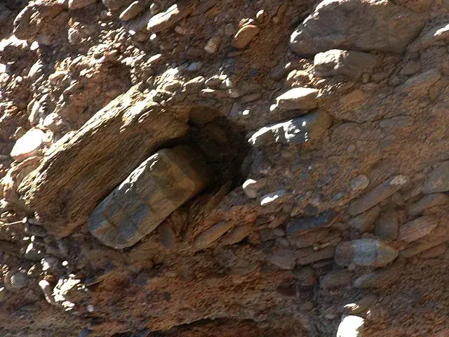
Cấu tạo lợp ngóidòng chảy từ trái sang phải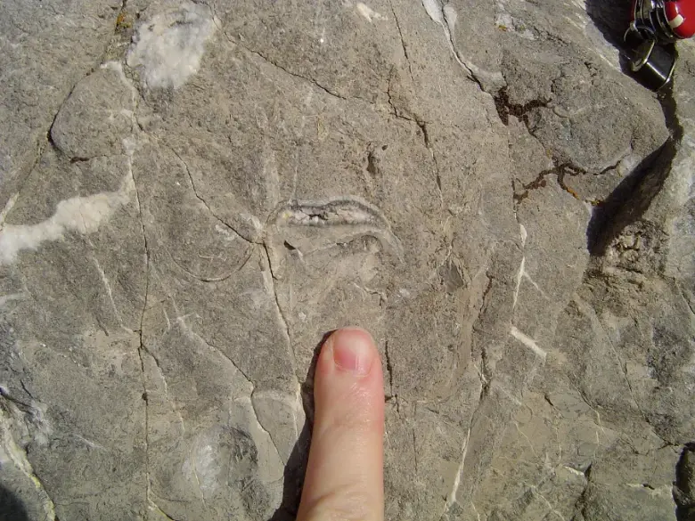
Chỉ hướng nócranh giới trầm tích – canxit từng nằm ngang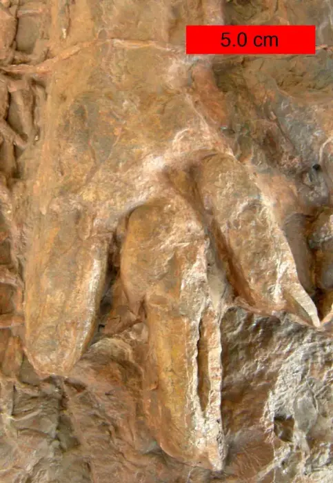
Hóa thạch dấu vếtdấu chân Eubrontes, Utah; phía trên là hướng ra khỏi trang
Tự kiểm tra: Câu hỏi Mục 5.4 trong giáo trình (tiếng Anh) ↗
5.5Môi trường trầm tích
Một mục tiêu chính của địa tầng học là xác định (depositional environment) ban đầu, như sông băng núi cao, đồng bằng ngập lũ thoải, sa mạc khô hạn hay đáy biển sâu (Hình 5.35). Bảng 5.6 là hướng dẫn đơn giản về những gì cần tìm trong ghi nhận đá.
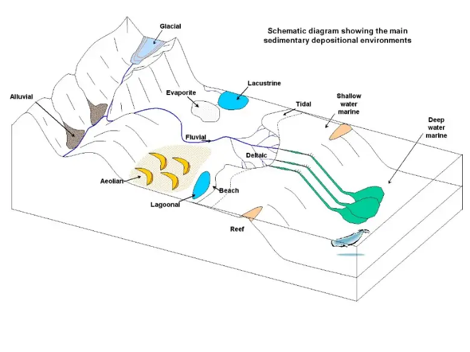
| Môi trường | Trầm tích | Đá thường gặp | Hóa thạch điển hình | Cấu tạo |
|---|---|---|---|---|
| Biển thẳm | Bùn và bùn đáy biển sâu rất mịn, đất tảo cát | Chert | Tảo cát | Ít |
| Quạt ngầm | Chuỗi Bouma phân cấp, cát/bùn xen kẽ | Đá vụn | Hiếm | Lòng dẫn, dạng quạt |
| Sườn lục địa | Bùn, có thể có cát, contourit | Đá phiến sét, bột kết, đá vôi | Hiếm | Dải trầm tích |
| Bờ ngầm dưới | Cát phân lớp mỏng | Cát kết | Xáo trộn sinh học | Lớp xiên dạng gò |
| Bờ ngầm trên | Cát lớp phẳng | Cát kết | Xáo trộn sinh học | Đáy phẳng, lớp xiên |
| Ven bờ (bãi biển) | Cát chọn lọc rất tốt | Cát kết | Xáo trộn sinh học | Ít |
| Bãi triều | Bùn và cát có lạch | Đá phiến sét, bùn kết, bột kết | Xáo trộn sinh học | Khe nứt khô, gợn sóng đối xứng |
| Ám tiêu | Bùn vôi có san hô | Đá vôi | Nhiều, thường là san hô | Ít |
| Đầm phá | Bùn phân lớp mỏng | Đá phiến sét | Nhiều; xáo trộn sinh học | Lớp mỏng |
| Châu thổ | Cát theo lạch xen bùn, có thể có đầm lầy | Đá vụn | Từ nhiều đến ít | Lớp xiên |
| Sông (fluvial) | Cát và bùn, có thể có trầm tích thô hơn | Cát kết, cuội kết | Lớp xương (hiếm) | Lớp xiên, lòng dẫn, gợn sóng bất đối xứng |
| Bồi tích (alluvial) | Từ bùn đến tảng, chọn lọc kém | Đá vụn | Hiếm | Lòng dẫn, khe nứt khô |
| Hồ (lacustrine) | Lớp mỏng hạt mịn | Đá phiến sét | Động vật không xương sống; lớp xương (hồ sâu, hiếm) | Lớp mỏng |
| Đầm lầy (paludal) | Vật liệu thực vật | Than đá | Mảnh vụn thực vật | Hiếm |
| Phong thành (đụn cát) | Cát và bột chọn lọc rất tốt | Cát kết | Hiếm | Lớp xiên lớn |
| Băng hà | Từ bùn đến tảng, chọn lọc kém | Cuội kết (tillit) | Không ghi | Vết khía băng hà, đá rơi |
5.5.1 Môi trường biển
Môi trường biển luôn nằm dưới nước biển. Trầm tích của chúng phụ thuộc chủ yếu vào độ sâu nước, với hai ngoại lệ: quạt ngầm và turbidit.
Biển thẳm
Đá biển thẳm hình thành trên (abyssal plain), đáy đại dương tương đối bằng phẳng với các gò nhỏ gọi là đồi biển thẳm (rộng 100 m đến 20 km, có thể do tách giãn tạo nên). Do nước ít chuyển động, trầm tích rất mịn và gồm ba loại:
- Bùn vôi: vỏ canxit của sinh vật phù du, ví dụ đá phấn.
- Bùn silic: vỏ sinh vật phù du bằng silica hoặc silica ngậm nước. Dưới (calcite compensation depth), canxit bị hòa tan nên chỉ còn vỏ silica, như trong (diatomaceous earth); chert cũng hình thành từ loại trầm tích này. Cả hai loại bùn đều là trầm tích sinh hóa.
- (pelagic clay): sét rất mịn, thường màu nâu hoặc đỏ, chìm rất chậm ở đại dương xa bờ, nơi ít sinh vật phù du.
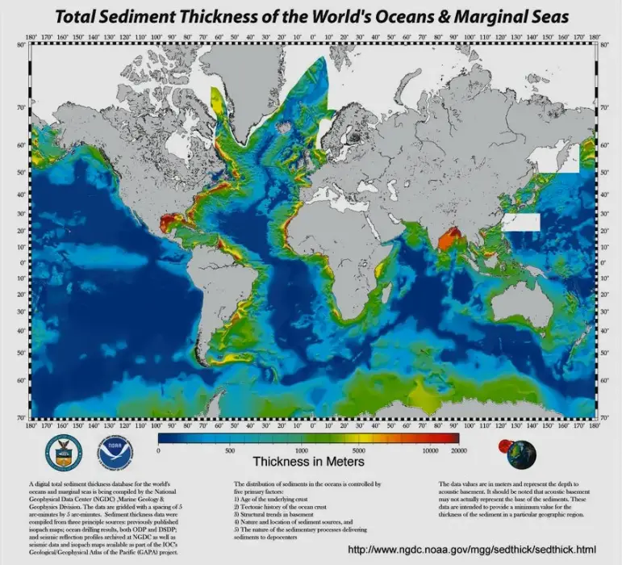
(submarine fan) và turbidit đưa trầm tích thô hơn xuống đáy sâu. Khi mực nước biển thấp, dòng sông mạnh khoét các hẻm ngầm vào thềm lục địa. Khi mực nước biển dâng, trầm tích tích tụ trên thềm, thường thành châu thổ. Theo chu kỳ, nó bị khuấy động thành hỗn hợp sệt đặc lao xuống các hẻm ngầm dưới dạng dòng đục (turbidity current), lắng đọng turbidit khi sườn thoải dần; một mạng lưới các dòng như vậy tạo thành quạt, giống như nón phóng vật và châu thổ trên đất liền (Hình 5.37).

Sườn lục địa
Trầm tích sườn lục địa ít gặp trong ghi nhận đá. Đáng chú ý nhất là (contourite): dòng hải lưu sâu chảy dọc sườn giữa thềm và đáy sâu tạo các dải trầm tích thoải, đôi khi xen với turbidit.
Bờ ngầm dưới và bờ ngầm trên
Bờ ngầm dưới (lower shoreface) nằm dưới (wave base) bình thường, độ sâu mà sóng còn khuấy động nước (khoảng nửa bước sóng), nên trầm tích ở đây không bị sàng lọc hằng ngày (Hình 5.38). Các lớp ở đây phân lớp mỏng và có thể có phân lớp xiên dạng gò do sóng bão lớn. Bờ ngầm trên (upper shoreface) nằm trong phạm vi tác động sóng bình thường nhưng dưới bãi biển. Nó có cát mịn chọn lọc rất tốt trong các lớp phẳng (phần dưới của chế độ dòng chảy trên), và lớp xiên do dòng chảy dọc bờ.
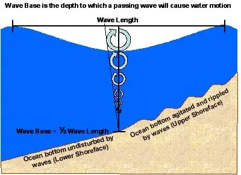

5.5.2 Môi trường chuyển tiếp (đới bờ)
Môi trường đường bờ là các đới phức tạp nơi nước biển gặp đất liền. Khả năng bảo tồn rất cao, vì lắng đọng thường diễn ra trên thềm lục địa và dưới nước, và đây là nguồn dầu mỏ và khí thiên nhiên quan trọng. Ngành nghiên cứu chúng, (sequence stratigraphy), xem xét trầm tích thay đổi thế nào khi mực nước biển lên xuống theo thủy triều, khí hậu và kiến tạo mảng. Mực nước biển dâng đều so với đường bờ là (transgression); mực nước hạ tương đối là (regression) (Hình 5.40). Xem thêm Chương 12.

- Ven bờ (bãi biển): (littoral zone) có cát phong hóa mạnh, chọn lọc tốt, chủ yếu là thạch anh; cát đen và các loại cát khác là ngoại lệ. (ZTR index; zircon, tourmalin, rutil) đo mức độ phong hóa của cát: các khoáng vật hiếm, bền này tập trung ở bãi biển cổ hơn, đôi khi đủ để khai thác. Sóng vỗ liên tục khiến bãi biển không có cấu tạo trầm tích; bãi biển được cấp nhiều trầm tích có thể có đụn cát gần đó.
- Bãi triều: (tidal flat, bãi bùn) bị thủy triều làm ngập và rút nước. Chủ yếu là trầm tích mịn với ít cát, gợn sóng nhiều hướng và khe nứt khô do lộ ra khi triều thấp; gợn sóng cùng khe nứt khô là đặc trưng của bãi triều. Cửa triều và lạch triều tập trung dòng chảy, nên có hạt thô hơn và gợn sóng lớn hơn, đôi khi có đụn.
- Ám tiêu: về mặt địa chất, (reef) là bất kỳ cấu tạo nhô cao nào trên thềm lục địa, nằm phía biển và tách khỏi bãi biển; nó không nhất thiết do sinh vật tạo ra, và từ này cũng dùng trên đất liền (nếp uốn Waterpocket ở Capitol Reef, Utah). Phần lớn ám tiêu có nguồn gốc sinh học. Rạn san hô lớn lên khi các sinh vật thân mềm bổ sung vật liệu cứng, và trên vùng đất đang lún chúng có thể phát triển bao quanh trầm tích và bảo tồn nó. Trầm tích của chúng mịn và chủ yếu là carbonat. Nước đục làm ngừng sự phát triển của rạn vì san hô cần ánh sáng cho tảo cộng sinh, (zooxanthellae). Rạn chắn sóng và bão, giúp hạt mịn lắng trong các đầm phá phía sau.
- Núi ngầm, rạn san hô vòng, guyot: theo chương sách, (seamount) là phần chân của một đảo đại dương còn lại dưới nước sau khi sóng bào mòn phần đỉnh (ví dụ dãy núi ngầm Emperor trên điểm nóng Hawaii). Ám tiêu phát triển trên đỉnh phẳng: nếu ám tiêu nhô lên trên mực nước biển và bao quanh đỉnh, đó là (atoll); nếu núi ngầm và ám tiêu bị nhấn chìm do bào mòn, sụt lún hoặc nước biển dâng, đó là .
- Đầm phá: (lagoon) là một vùng nước biển nhỏ nằm phía trong bờ hoặc bị một ám tiêu hay đảo chắn ngăn cách. Được che chắn khỏi thủy triều, dòng chảy và sóng, nó tích tụ trầm tích rất mịn. Đầm phá và cửa sông có năng suất sinh học cao, nên đá của chúng thường có xáo trộn sinh học hoặc than. Nơi bốc hơi vượt lượng nước vào, các bãi muối gọi là và các cánh đồng đụn cát hình thành ở mức triều cao hoặc cao hơn.
- Châu thổ: (delta) hình thành nơi sông đổ vào hồ hoặc biển, độ dốc giảm về không và dòng chảy chậm lại, thả mảnh vụn thô trước, rồi đến cát và bùn. Khi một phần bị lấp đầy, dòng chảy chuyển qua lại thành một mạng lưới (distributary channel) lan rộng. Tên gọi xuất phát từ chữ cái Hy Lạp Δ, hình dạng châu thổ sông Nile. Châu thổ được phân loại theo quá trình chi phối (Hình 5.42).
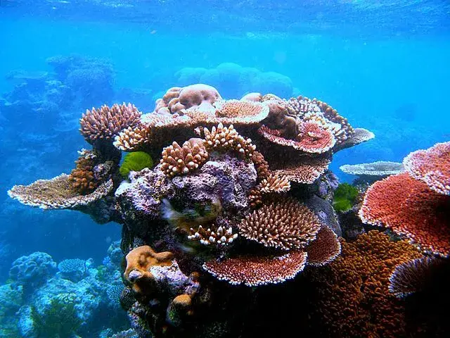
Rạn san hôrạn Flynn, Úc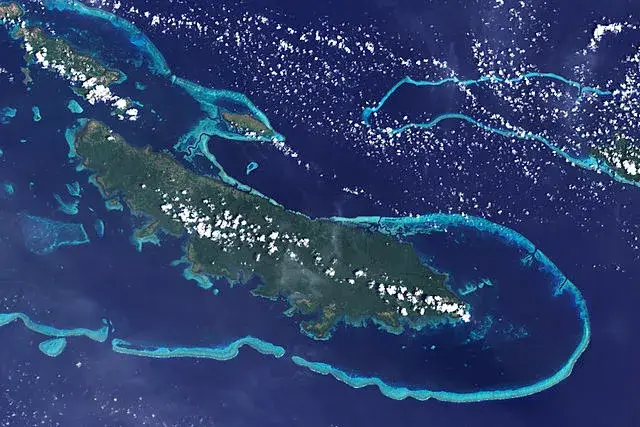
Rạn viền bờVanatinai; khi đảo bị bào mòn, chỉ còn lại rạn Một "reef" trên đất liềnnếp uốn Waterpocket, Capitol Reef, Utah
Một "reef" trên đất liềnnếp uốn Waterpocket, Capitol Reef, Utah Bãi triềucác đới và lạch (nhãn tiếng Anh)
Bãi triềucác đới và lạch (nhãn tiếng Anh)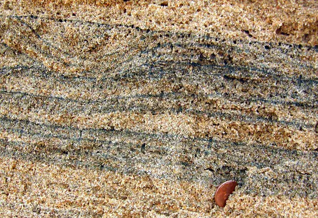
Cát bãi biểncác lớp khoáng vật nặng đã thạch hóa (sẫm màu), Ấn Độ Đầm pháKara-Bogaz Gol, Turkmenistan
Đầm pháKara-Bogaz Gol, Turkmenistan
 Sóng chi phốisông Nile, Ai Cập: bờ trơn, các gờ bãi biển
Sóng chi phốisông Nile, Ai Cập: bờ trơn, các gờ bãi biển Sông chi phốiMississippi: đê tự nhiên tạo hình "chân chim"
Sông chi phốiMississippi: đê tự nhiên tạo hình "chân chim" Triều chi phốisông Hằng: lạch giữa các cồn cát và gờ
Triều chi phốisông Hằng: lạch giữa các cồn cát và gờ
5.5.3 Môi trường lục địa
Môi trường trên đất liền rất đa dạng, và nước, dù ở thể lỏng, đóng băng hay khan hiếm, là yếu tố quan trọng trong tất cả.
- Sông: hệ thống gồm (meandering stream), với một lòng dẫn lượn qua đồng bằng ngập lũ có trầm tích mịn chỉ lắng đọng khi lũ, hoặc (braided stream), với trầm tích thô hơn trong nhiều lòng dẫn đan xen quanh các cồn sỏi và cát (Chương 11).
- Bồi tích: hệ thống có dòng nước gián đoạn và phổ biến ở vùng khô hạn ít đất. Trầm tích đặc trưng nhất là (alluvial fan), một nón trầm tích lớn nơi dòng chảy ra khỏi thung lũng núi khô. Trầm tích chọn lọc kém và thô, thường nằm gần hồ playa hoặc trầm tích phong thành; các lớp bồi tích đã thạch hóa lấp đầy các bồn trũng của vùng Basin and Range.
- Hồ: trầm tích hình thành giống trầm tích biển ở quy mô nhỏ hơn, rất mịn và phân lớp mỏng. Hồ hình thành trong bồn trũng kiến tạo (hồ Baikal), caldera núi lửa (hồ Crater), cảnh quan băng hà (Ngũ Đại Hồ), khí hậu ẩm hơn trong quá khứ (hồ mưa Bonneville) và đồng bằng ngập lũ (hồ móng ngựa). Khi hồ khô cạn, hình thành, với nhiều khoáng vật evaporit hơn.
- Đầm lầy: hệ thống (bãi lầy than bùn, đầm lầy cỏ, đầm lầy rừng) chứa nhiều chất hữu cơ, thường ở vùng ven biển, ẩm, thấp và ấm. Một bãi lầy than bùn có thể trở thành than đá khi thạch hóa.
- Phong thành: trầm tích (aeolian, eolian) do gió mang tới. Gió mang được ít hơn nước, nên hạt từ bụi đến cát; bột và sét có thể vượt cả đại dương. Khi đủ trầm tích, đụn cát lớn hình thành (Hình 5.43). Ralph A. Bagnold (1896–1990) chỉ coi đụn barchan (đụn lưỡi liềm) và đụn dọc seif là đụn thật sự; những người khác còn công nhận đụn ngang, đụn hình sao, đụn parabol và đụn dọc, và đụn parabol và đụn dọc được thực vật giữ lại phổ biến ở ven biển. Bột do gió mang bị nén chặt là (loess), thường là bột đá băng hà; nó phủ hàng nghìn dặm vuông ở vùng Trung Tây Hoa Kỳ, và Cao nguyên Hoàng Thổ của Trung Quốc có nguồn từ sa mạc Gobi.
- Băng hà: trầm tích chọn lọc kém nhất trong tự nhiên. Loại chính là (diamictite), hỗn hợp không chọn lọc gồm mảnh lớn và nhỏ; (till) băng hà kết hợp bột đá mịn với các (erratic) khổng lồ. Mảnh vụn lớn thường có (striations) do mài mòn dưới băng chuyển động. Sông băng cũng tạo ra các môi trường sông, châu thổ, hồ, bồi tích và phong thành (Chương 14).

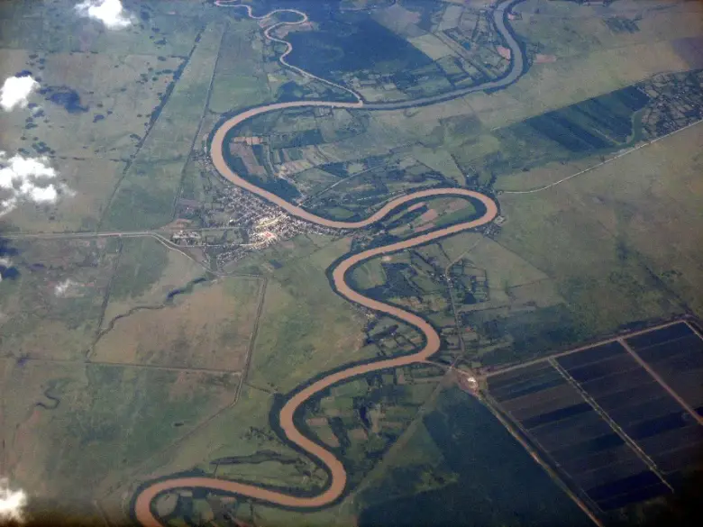
Sông uốn khúcsông Cauto, Cuba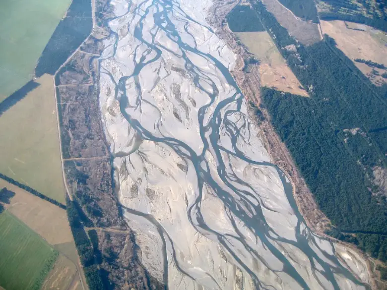
Sông bện tếtsông Waimakariri, New Zealand Nón phóng vậtRed Rock Canyon, California
Nón phóng vậtRed Rock Canyon, California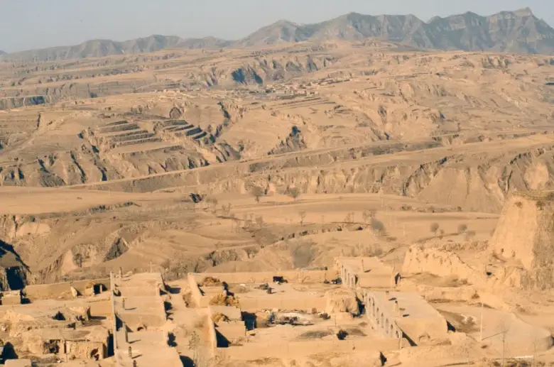
Hoàng thổCao nguyên Hoàng Thổ, Trung Quốc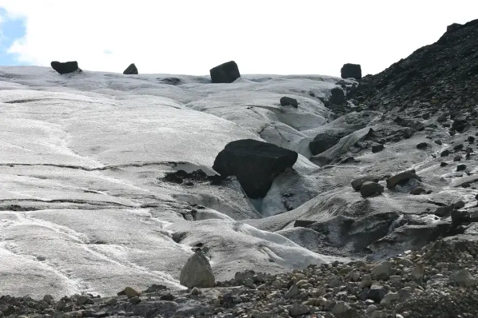
Băng hàgần sông băng Athabasca, Canada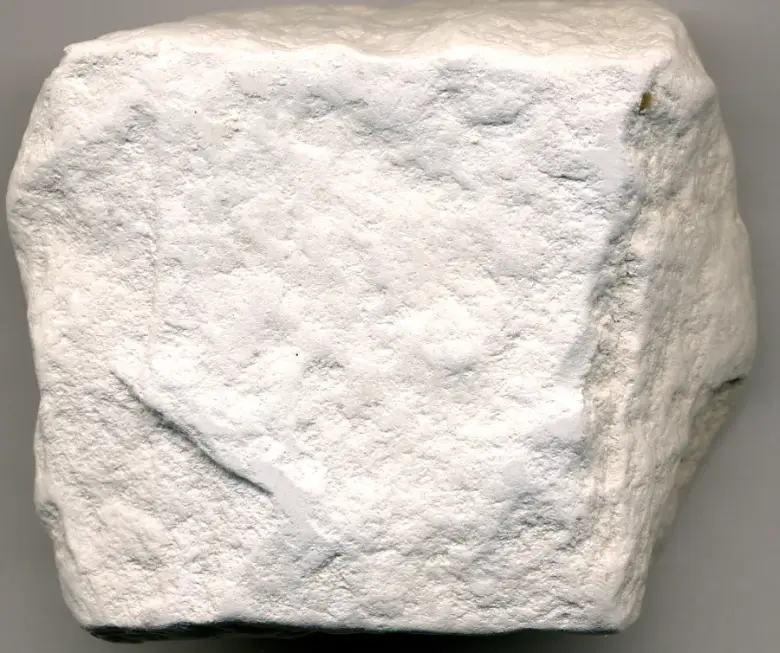
Đất tảo cátthành hệ Monterey, California
5.5.4 Tướng
Nhà địa chất còn nhóm đá trầm tích theo đặc điểm lắng đọng, gọi là (facies) hay (lithofacies): các tính chất vật lý, hóa học và sinh học, kể cả cách chúng thay đổi dọc theo các lớp cùng tầng hoặc cùng tuổi. Nhiều môi trường hoạt động song song cùng lúc, nên đá cùng một tuổi có thể ghi lại nhiều môi trường. Ở Grand Canyon, các tầng cùng tuổi gồm cát bãi biển, bột bãi triều, bùn ngoài khơi và đá vôi ở xa bờ hơn.
Tướng cũng thay đổi theo thời gian tại một nơi. Trong một đợt biển tiến, đường bờ lấn vào đất liền và các môi trường ngoài khơi phủ lên vùng đất cũ, nên tướng bãi biển bị tướng ngoài khơi chôn vùi (Hình 5.45). Vào Cambri giữa, biển tiến qua vùng Grand Canyon, để lại tướng bãi biển Cát kết Tapeats, tướng bùn gần bờ Đá phiến sét Bright Angel và Đá vôi Muav ở xa bờ.
Tướng sinh học là di tích (than đá, đất tảo cát) hoặc bằng chứng (hóa thạch) của sinh vật. (index fossil), đặc trưng cho một môi trường hoặc một thời kỳ, là một ví dụ. Vì biển tiến, lắng đọng và chôn vùi diễn ra trong thời gian dài, các tổ hợp hóa thạch ghi lại sự tiến hóa: ở Grand Canyon, tướng sinh học cho thấy các dạng sống cổ hơn ở phía tây và trẻ hơn ở phía đông.
Tự kiểm tra: Câu hỏi Mục 5.5 trong giáo trình (tiếng Anh) ↗
Tóm tắt
Đá trầm tích gồm hai nhóm chính: đá vụn và đá hóa học. Phong hóa cơ học và hóa học phá hủy đá gốc thành trầm tích, và xói mòn mang trầm tích đi. Trầm tích được lắng đọng, chôn vùi, nén ép và xi măng hóa trở thành đá vụn, được phân loại theo độ hạt; ví dụ cát kết gồm các hạt cỡ cát. Đá trầm tích hóa học kết tủa từ nước và được phân loại theo thành phần; đá vôi là calci carbonat. Cấu tạo trầm tích ghi lại cách trầm tích được lắng đọng, và môi trường trầm tích, từ biển sâu đến sa mạc, được xác định từ cấu tạo, trầm tích và hóa thạch để tái dựng địa lý cổ của một vùng.
Ôn nhanh
- Nước: phân cực, cố kết, đặc nhất ở 4 °C, lỏng từ 0–100 °C, dung môi vạn năng.
- Phong hóa cơ học: giãn nở do giảm áp (phong hóa bóc vỏ), nêm băng, nêm rễ cây, giãn nở do muối (tafoni). Mảnh càng nhỏ thì càng nhiều bề mặt cho phong hóa hóa học.
- Phong hóa hóa học: thủy phân (fenspat → sét), hòa tan (karst), oxy hóa (hematit, goethit, limonit). Goldich: olivin phong hóa đầu tiên, thạch anh sau cùng.
- Các tầng đất O, A, (E), B, C, R. Đất phụ thuộc vào đá mẹ, địa hình, phong hóa, khí hậu và sinh vật.
- Thạch hóa: lắng đọng → nén ép → xi măng hóa, tất cả nằm trong quá trình thành đá.
- Đá vụn theo độ hạt: cuội kết/dăm kết > 2 mm; cát kết 1/16–2 mm; bột kết, sét kết, bùn kết, đá phiến sét mịn hơn. Độ chọn lọc và độ mài tròn ghi lại quá trình vận chuyển.
- Đá hóa học theo thành phần: evaporit (canxit → thạch cao → halit → muối K-Mg), tufa vôi, travertin, chert, thành hệ sắt dải, đá vôi trứng cá; đá vôi (sinh hóa); than đá (hữu cơ).
- Cấu tạo: phân lớp, phân lớp phân cấp (Bouma), gợn sóng, đụn và lớp xiên, phản đụn, khe nứt khô, dấu vết đáy lớp, cấu tạo lợp ngói, dấu hiệu chỉ hướng nóc.
- Môi trường: biển, chuyển tiếp, lục địa. Khi biển tiến, các tướng dịch về phía đất liền, nên cát bãi biển nằm dưới bùn ngoài khơi.
Tự kiểm tra: Câu hỏi ôn tập Chương 5 trong giáo trình (tiếng Anh) ↗
Tài liệu tham khảo
Ghi chú kiểm chứng
Mọi nhận định trong tài liệu này đều đã được đối chiếu với chương sách. Nơi chương sách khác với tài liệu tham khảo hiện hành hoặc tự mâu thuẫn, tài liệu dùng giá trị đã sửa và liệt kê điểm khác biệt ở đây, để bạn biết giáo trình viết gì.
| Chủ đề | Chương sách viết | Ghi chú |
|---|---|---|
| Tỷ lệ diện tích bề mặt trên thể tích | 96/64 = 0,75 (3:2); 192/64 = 1,5 (3:1); 384/64 = 6 | Lỗi tính toán: 96/64 = 1,5 (3:2) và 192/64 = 3 (3:1). Tỷ lệ trong ngoặc và giá trị cuối là đúng. Hình 5.5 dùng các giá trị đã sửa. |
| Sản phẩm thủy phân | Fenspat + acid carbonic tạo ra "sét tan trong nước" | Khoáng vật sét là phần cặn rắn; các cation, bicarbonat và silica mới là phần hòa tan. Chính phản ứng và đoạn văn tiếp theo trong chương cũng nói vậy. |
| CO2 trong không khí | "Khí phổ biến thứ năm" | Trong không khí khô, CO2 đứng thứ tư, sau nitơ, oxy và argon (UCAR); chỉ đứng thứ năm nếu tính cả hơi nước vốn biến động. Tài liệu bỏ thứ hạng này. |
| pH nước mưa | "Nước mưa tự nhiên có thể có tính acid cao, pH thấp tới 2" | Nước mưa bình thường có pH khoảng 5,6; mưa acid, chủ yếu do ô nhiễm, thường có pH 4,2–4,4 (U.S. EPA). Tài liệu bỏ nhận định pH 2. |
| Độ hạt của bùn kết | "Hạt nhỏ hơn cát (dưới 2 mm)" | Hạt nhỏ hơn cát là dưới 1/16 mm (0,0625 mm); 2 mm là ranh giới cát – sỏi sạn (USGS). |
| Thang Wentworth | Cỡ sỏi 2,52 đến 0,08 inch là "sạn rất thô đến rất mịn"; "hạt nhỏ hơn cát gọi là bột" | Các giá trị inch đó (64 đến 2 mm) là ranh giới của cấp sỏi và cấp sạn, không phải cỡ sạn. Nhỏ hơn bột là sét (< 0,004 mm). Bảng 5.2 theo Wentworth (1922) và USGS. |
| Các tầng đất | Phần trên tầng B là "regolith"; phần dưới tầng B là "saprolite" | Trong phần lớn tài liệu, regolith (lớp phủ phong hóa) là toàn bộ vật liệu bở rời phía trên đá gốc (gồm cả đất), còn saprolit là đá phong hóa tại chỗ vẫn giữ cấu trúc ban đầu, thường nằm dưới tầng B. Tài liệu nêu cách dùng của chương nhưng đánh dấu lưu ý. |
| Tên bộ đất | "Xoxisols", "xosisols", "Ardisol" | Oxisol và Aridisol (USDA NRCS). |
| Sinh vật cố định đạm | "Vi khuẩn đặc biệt chỉ có trong đất" | Vi sinh vật cố định đạm cũng sống trong nước, ví dụ vi khuẩn lam ở đại dương. Ý chính của chương là vi khuẩn đất cung cấp phần lớn nitơ dễ sử dụng trên đất liền. |
| Công thức dolomit | "CaMgCO3" (mục đá sinh hóa) | CaMg(CO3)2, như chương viết ở mục 5.3.1. |
| Varve | Chu kỳ "thường theo ngày hoặc theo mùa" | Theo cách dùng chuẩn, một varve là trầm tích của một năm: một lớp mùa hè thô hơn và một lớp mùa đông mịn hơn. Tài liệu viết "chu kỳ lặp lại". |
| Chuỗi Bouma | Các phần A–D | Chuỗi đầy đủ của Bouma (1962) có phần thứ năm, E, là bùn biển khơi mịn ở trên cùng. Hình vẽ thể hiện các phần A–D của chương. |
| Dấu vết đáy lớp | "Thường gặp trong trầm tích sông" | Khuôn xoáy và khuôn rãnh được biết đến nhiều nhất ở đáy các lớp turbidit, như chính ảnh khuôn rãnh trong chương cho thấy. Tài liệu không nhắc lại "trầm tích sông". |
| Núi ngầm | "Phần chân của một đảo đại dương còn lại dưới nước sau khi phần trên bị bào mòn" | Nói chung, núi ngầm là bất kỳ ngọn núi nào dưới biển; núi ngầm bị bào mòn có đỉnh phẳng là guyot. Tài liệu nêu định nghĩa của chương và ghi rõ như vậy. |
| Diamictit | "Nghĩa đen là hai cỡ hạt" | Thuật ngữ bắt nguồn từ một từ nghĩa là "trộn lẫn hoàn toàn"; nó mô tả hỗn hợp nhiều cỡ hạt không chọn lọc. Tài liệu nêu nghĩa mà không nêu từ nguyên. |
| Lỗi chính tả | "Agnold"; "Minevre"; "Bright Angle Shale"; "Castle formation"; "Athabaska"; "Hawiian" | Đã sửa thành Bagnold, Minerve, Bright Angel Shale, Castile Formation, Athabasca, Hawaiian. |
Các hình vẽ được đối chiếu với chương sách và tài liệu chuẩn: góc liên kết của nước (khoảng 104,5°, chương làm tròn thành 105°), thứ tự Goldich (Goldich, 1938, tương ứng với dãy Bowen), tỷ lệ phần trăm evaporit (bảng trong chương), hình học gợn sóng và đụn (sườn đón dòng hoặc đón gió thoải, sườn khuất dốc, lớp trước nghiêng về phía xuôi dòng), và các tướng biển tiến Tapeats – Bright Angel – Muav trẻ dần về phía đông.
Đối chiếu thuật ngữ tiếng Việt
Thuật ngữ được đối chiếu với Bách khoa thư Địa chất (mục "Phong hóa") và tên mục Wikipedia tiếng Việt. Theo các nguồn này, tài liệu dùng: phong hóa cơ học (vật lý), phong hóa hóa học, phong hóa bóc vỏ, thủy phân, oxy hóa, hòa tan, acid carbonic, karst, laterit, bauxit, saprolit, đá mẹ, mùn, xói mòn, trầm tích, đá trầm tích, đá vôi, đá phiến sét, cát kết (sa thạch), than đá, than bùn, liên kết hydro, sức căng bề mặt, cố định đạm, zircon, đụn cát, châu thổ, phân lưu, đầm phá, bồi tích, ám tiêu, rạn san hô vòng, núi ngầm, núi ngầm chóp phẳng (guyot), sét tảng lăn (till), địa tầng học. Các thuật ngữ sau chưa tìm thấy trong nguồn chính thức, nên dùng tên thông dụng hoặc phiên âm kèm tên tiếng Anh: rễ hóa đá (rhizolith), tafoni, tinh thể phễu, dãy hòa tan Goldich, hoodoo, andisol, caliche, tufa vôi, geyserit, coquina, micrit, varve, chuỗi Bouma, đường phân tách, gợn sóng leo, phân lớp xiên dạng gò, phản đụn, khe nứt co ngót dưới nước, dấu vết đáy lớp, khuôn xoáy, khuôn rãnh, khuôn tải, cấu tạo chỉ hướng nóc, hốc (vug), contourit, chỉ số ZTR, zooxanthellae, sabkha, playa, diamictit, tướng thạch học, và tên các cấp hạt Wentworth (tảng, cuội, sỏi, sạn).
Nguồn & trích dẫn
Nội dung tóm tắt từ An Introduction to Geology, Chương 5, © 2017 Chris Johnson, Matthew D. Affolter, Paul Inkenbrandt và Cam Mosher, giấy phép CC BY-NC-SA 4.0. Hình ảnh là hình của chính chương sách, sử dụng theo giấy phép nêu trong phần ghi nguồn hình của chương và được ghi nguồn trong từng chú thích.
- CC BY / CC BY-SA: theo ghi nguồn trong chú thích từng hình.
- Phạm vi công cộng: tác phẩm của chính phủ Hoa Kỳ (USGS, NASA, NOAA, National Park Service, Federal Highway Administration, U.S. Navy) và các tác phẩm khác như đã ghi.
- Phân tử nước, các khối lập phương diện tích bề mặt, thủy phân, dãy Goldich, phẫu diện đất, thạch hóa, thứ tự evaporit, chuỗi Bouma, gợn sóng, đụn và các tướng biển tiến: vẽ cho tài liệu này theo nội dung và hình trong chương.
- Tài liệu bên ngoài dùng để kiểm chứng: Wentworth (1922) và bảng độ hạt của USGS; Goldich (1938); U.S. EPA về pH nước mưa; USDA NRCS về các bộ đất.
- Đối chiếu thuật ngữ tiếng Việt: Bách khoa thư Địa chất (mục "Phong hóa", Đặng Mai và Ngô Quang Toàn) và tên mục Wikipedia tiếng Việt.